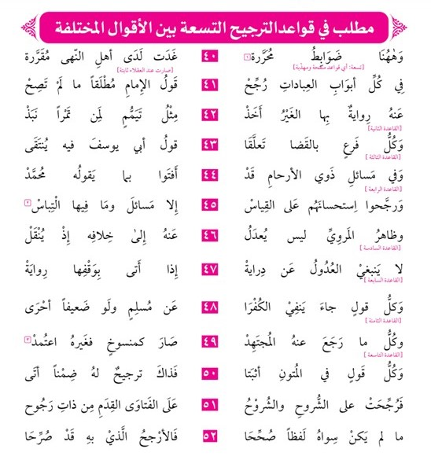

قواعد الترجيح
التقسيمات الثلاثة
باعتبار المبنى(الكتب و الأشخاص و الموضوعات و الألفاظ)
باعتبار التصريح و التعريض
باعتبار اختلاف الأقوال و اختلاف التصحيحات
التقسيم الأول: قواعد الترجيح باعتبار مبنى التصحيح
| باعتبار طبقات الكتب و المسائل | رواية الأصول تُقدم على رواية النوادر، و المتون تُقدم على الشروح والشروح تقدم على الفتاوى |
|---|---|
| باعتبار الأشخاص | يقدم قول الإمام ثم قول الثاني ثم الثالث ثم قول زفر و الحسن بن زياد (على تفصيل و اختلاف) |
| باعتبار الموضوعات | في العبادات قول الإمام ،في القضاء قول أبي يوسف ،في ذوي الأرحام قول محمد ،في 17 مسألة قول زفر ،في بعض المسائل قول الحسن بن زياد |
| باعتبار الألفاظ | مايدل على الإجماع لفظ الفتوى بالحصر و بدون الحصر التصحيح باسم التفضيل و بدون اسم التفضيل |
التقسيم الثاني لقواعد الترجيح باعتبار التصريح و التعريض
التصحيح الصريحي: الدرجات الخمسة
| ما يدل على الإجماع | مثل: عليه عمل الأمة، عليه عمل اليوم |
|---|---|
| لفظ الفتوى بالحصر | مثل: عليه الفتوى، به يفتى |
| لفظ الفتوى بدون الحصر | مثل: الفتوى عليه، يفتى به |
| التصحيح باسم التفضيل | مثل: هو الأصح، هو الأظهر، هو الأوجه، هو الأشبه |
| التصحيح بغير اسم التفضيل | مثل: هو الصحيح، هو الظاهر ، هو الراجح |
التصحيح الالتزامي: الطرق الخمسة
| التقديم والتأخير | يعني تقديم القول الراجح وتأخير المرجوح عند ذكر الأقوال كما في الملتقى و الخانية، وعكسه عند ذكر الدلائل كما في الهداية |
|---|---|
| النسبة إلى كتب المذهب | الأصول الستة، أو المتون الأربعة، مثل: كذا في رواية الأصول، أو في ظاهر الرواية، أو وعليه المتون |
| النسبة إلى أهل المذهب | يعني نسبة القول الراجح إلى المذهب عند ذكر الأقوال، مثل: هذا عندنا، عليه مشايخنا، أو نسبة أحد القولين إلى مشايخ المذهب عند ذكر الدلائل، مثل: قلنا، ولنا. |
| التعليل وترك التعليل | يعني ذكر المذهب المرجوح بلا دليل، وذكر القول الراجح مع دليله |
| التعليل وجواب التعليل | يعني ذكر أدلة القولين، ثم الجواب عن الدليل المرجوح |
التصحيح التصريحي مقدم على التصحيح الالتزامي.(رد المحتار: ج 1 ص 72)
التقسيم الثالث : قواعد الترجيح عند اختلاف الأقوال واختلاف التصحيحات
| الأول | يفتى في العبادات بقول الإمام إلا إذا صرحوا بخلافه |
|---|---|
| الثاني | الفتوى على قول أبي يوسف في القضاء وما يتعلق بها، كالدعوى و الشهادات |
| الثالث | الفتوى على قول محمد في جميع مسائل ذوي الأرحام |
| الرابع | يرجح الاستحسان على القياس إلا في مسائل |
| الخامس | ظاهر الرواية راجحة على غيرها إلا إذا صرحوا بخلافه |
| السادس | الأقوى حجة راجح على غيره |
| السابع | الرواية التي يحترز بها من تكفير المسلم راجحة على غيرها؛ لأنه الأحوط. |
| الثامن | المرجوع عنه بمنزلة المنسوخ، فالمرجوع إليه هو الراجح |
| التاسع | المتون مقدم على الشروح، والشروح على الفتاوى |
| الأول | إذا كان تصحيح أحدهما بلفظ الصحيح، والآخر بلفظ الأصحّ، و المشهور ترجيح الأصحّ على الصحيح. |
|---|---|
| الثاني | إذا كان أحدهما بلفظ الفتوى والآخر بغيره . |
| الثالث | إذا كان أحـد القولين المصححين في المتون، والآخـر في غيرها؛ لأن المتون موضوعة لنقل المذهب. |
| الرابع | إذا كان أحـدهـما قول الإمام الأعظم، والآخـر قول بعض أصحابه؛ يقدم قول الإمام؛ لدقة نظره و سداد فكره. |
| الخامس | إذا كان أحدهما ظاهر الرواية فيقدم على الآخر. |
| السادس | إذا كان أحـد القولين المصحّحين قال به جُلُّ المشايخ العظام. |
| السابع | إذا كان أحدهما الاستحسان والآخر القياس؛ لما تقرر أن الأرجح الاستحسان ، إلا في مسائل. |
| الثامن | إذا كان أحدهما أنفع للوقف. |
| التاسع | إذا كان أحدهما أوفق لأهل الزمان؛ فإن ما كان أوفق لعرفهم أو أسهل عليهم، فهو أولى؛ لقوله علیه السلام لعلي ومعاذ رضي الله عنهما حین بعثهما إلی الیمن:’’ یسرا ولا تعسرا ‘‘. |
| العاشر | إذا كان أحـدهـما دليله أوضح وأظهر؛ لما تقررأن الترجيح بقوة الدليل. |
تنبيه:بعض هذه القواعد مشتركة وبعضها مختصة
جميع ما ذكر من قواعد الترجيح يعمل بها في صورتين : عند تعارض التصحيح، وعند عدم تصحيح واحد من القولين. والقواعد المارة من قبل خاصة تفيد الترجيح بين الأقوال المتعارضة فقط.
والحاصل: أن بعض هذه القواعد مشتركة بين هذين النوعين، وبعضها مختصة بالنوع الثاني، فالمشتركة خمسة: كونه قول الإمام، أو ظاهر الرواية، أو في المتون، أو أقوى دليلا، أو استحسانا، كما مرّ. والخاصة بالنوع الثاني خمسة أيضا : كون أحد التصحيحين بلفظ الأصح، أو بلفظ الفتوى، أو قاله الأكثر ، أو كان أنفع للوقف، أو أوفق لأهل الزمان."(تعليقات على شرح عقود رسم المفتي)
حاصل أساس الترجيح أمور ثلاثة
۱_قوة الدليل، ۲_التيسير على الناس، ۳_الاحتياط و التورع
في الظاهر سبعة
| الأول | الأقوى حجة و الأوضح بُرهانا |
|---|---|
| الثاني | الأثبت رواية و الأضبط نقلا(إشارة إلى ترجيح ظاهر الرواية و المتون) |
| الثالث | الأكثر قائلا(جمهور أهل العلم و الصلاح) |
| الرابع | الأوفق زمانا و الأيسر عملا |
| الخامس | الأنفع للوقف |
| السادس | الأحوط تكفيرا |
| السابع | الأحسن استحسانا. |